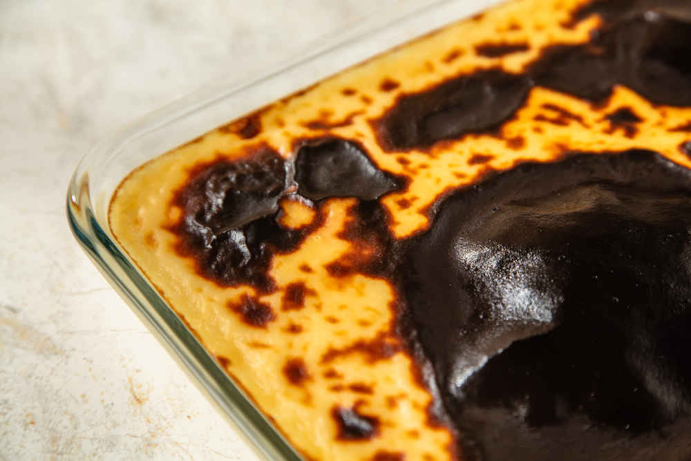

Bursa
Yeşilin her tonu, Uludağ'ın zirvesi Bursa'da tarihin ve doğanın kucaklaşması.

Bursa ili, Türkiye'deki en eski yerleşim yerlerinden biridir ve gölleri ile tanınır.
Bursa mutfağı, özellikle tarhanası ile ünlüdür.
Bursa doğal güzellikleri arasında antik kentleri önemli bir yer tutar.

Bursa Arkeoloji Müzesi
Bölgenin zengin arkeolojik eserlerini sergileyen müze.

Osmanlı Evi Müzesi
Osmanlı dönemi yaşamını yansıtan etnografik müze.

Koza Han
Osmanlı dönemi yaşamını yansıtan tarihi ticaret merkezi.

İskender Kebap
Bursa’nın en ünlü yemeği. Dönerin altına serilen pide, üzerine yoğurt, tereyağı ve domates sosu ile servis edilir.

Kestane Şekeri
Bursa'nın simgesi haline gelmiş bu tatlı, haşlanmış kestanelerin şerbetle buluşmasıyla hazırlanır.

Süt Helvası
Un, tereyağı, süt ve şekerle yapılan bu tatlı, fırınlanarak üzeri kızartılır ve sıcak servis edilir.